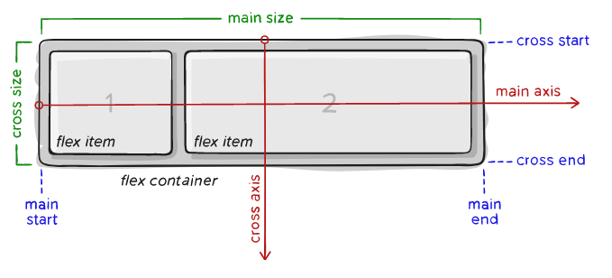

뷰포트나 요소의 크기가 불명확하거나 동적으로 변할 때에도
효율적으로 요소를 배치, 정렬, 분산할 수 있는 방법을 제공하는 CSS의 새로운 레이아웃 방식.
flexbox layout의 장점은 '복잡한 계산 없이 요소의 크기와 순서를 유연하게 배치할 수 있다는 것임.
정렬, 방향, 순서, 크기 등을 유연하게 조절할 수 있기 때문에
별도의 분기처리를 줄일 수 있고, CSS만으로 다양한 레이아웃을 구현가능함.
flexbox froggy : https://flexboxfroggy.com
display: flex - flex 컨테이너에게 flexbox 레이아웃 적용을 선언함
align-items - 종축(cross axis)을 기준으로 수직정렬함
ㄴ flex-start, center, flex-end 등
justify-content - 횡축(main axis)을 기준으로 수평정렬함
ㄴ left, center, right 등
flex-direction - 횡축(main axis)을 기준으로 아이템을 어떻게 배치할지 결정
ㄴ row(기본값, 가로), reverse-row(가로로 역순), column(세로), reverse-column(역순으로 세로) 등
flex 컨테이너 내에 포함된 항목들을 일정 간격으로 배치하려면 justify-content 속성을 사용.
space-between : 항목들을 일정한 간격으로 배치(아이템이 화면 양쪽에 배치되도록 함)
space-around : 항목 주위에 일정한 간격으로 배치
space-evenly : 항목 양 끝에 일정한 간격으로 배치
각 항목들의 시각적 나열 순서를 결정할 때는 order라는 속성을 이용할 수 있다.
숫자값이 낮을수록 앞(먼저)에 배치되고 크면 뒤(나중)에 배치된다.